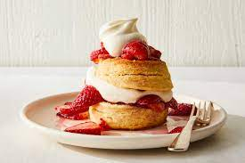

Strawberry Shortcake

There's a kind of magic in a summer recipe that you can make wherever you are, provided that wherever you are has, say, flour, butter, an oven
and whatever fruit is most glorious is at that very moment. This strawberry shortcake is so simple that you can make it within the hour,
and so satisfying that it may become your go-to for summer, the recipe you keep in your back pocket.
Strawberries are the classic choice, but this would also be heavenly in high summer with very ripe peaches or any other juicy, macerated fruit.
—Nancy Harmon Jenkins
Ingredients(4 servings)
- 2pints ripe, well-rinsed strawberries
- ½cup sugar, or more to taste
- 4cups flour
- 3tablespoons sugar
- ¼teaspoon salt
- 5teaspoons baking powder
- 1¼cups butter
- 3cups whipping cream
- ¼teaspoon vanilla extract
Steps
- Pick over and hull strawberries. Cut in half or slice, depending on size.
Gently crush about a quarter of the berries with a fork to release their juices.
Mix with remaining berries and the ½ cup of sugar, adding more sugar if necessary.
Set aside, covered, for about half an hour to develop flavor.
- Preheat oven to 450 degrees.
- Into a large mixing bowl, sift together flour, 3 tablespoons sugar, salt and baking powder.
Add ¾ cup of softened butter, and rub into dry ingredients as for pastry. Add 1¼ cups cream, and mix to a soft dough.
Knead the dough for one minute on a lightly floured pastry board, then roll it out to about ½-inch thickness.
Using a 3-inch biscuit cutter, cut an even number of rounds - 2 rounds per serving.
- Use a little of the butter to grease a baking sheet. Place half the rounds on it. Melt remaining butter and brush a little on the rounds;
place remaining rounds on top. Bake for 10 to 15 minutes, or until golden brown.
- Remove from the oven, and pull shortcakes apart. Brush the insides with some of the remaining melted butter.
- Beat remaining cream until it thickens. Add vanilla. Beat again just until thick.
- Place a bottom half of a shortcake on each plate. Top with a generous spoonful of berries. Cover with a top half, add a few more berries,
and top with whipped cream. Serve immediately.